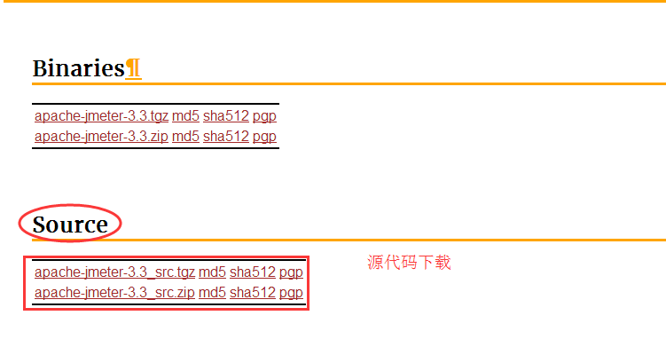
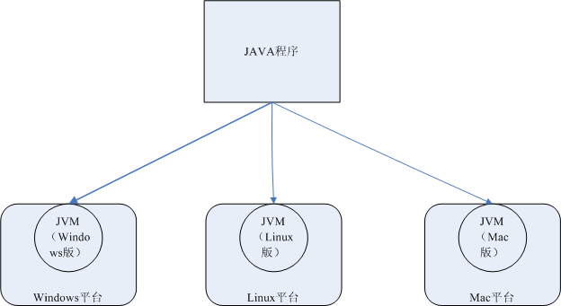

Jmeter 介绍
目标
- 了解Jmeter背景
- 了解Jmeter能做什么？
- 了解JDK原理
1. Jmeter是什么？
1.1 概念
Jmeter：是Apche公司使用Java平台开发的一款测试工具。
作用：
1. 接口测试
2. 性能测试
3. 压力测试
4. Web自动化测试
5. 数据库测试
6. JAVA程序测试
优点：
1. 开源、免费
2. 支持多协议
3. 小巧
4. 功能强大
- 
1.5 缺点
- 不支持IP欺骗
- 使用JMeter无法验证JS程序，也无法验证页面UI，所以要须要和Selenium配合来完成Web2.0应用的测试
1.6 总结
1. JMeter概念
2. JMeter作用
3. JMeter优点
4. JMeter缺点
2. 了解：配置JMeter运行环境（JDK、JRE、JVM）
2.1 JDK
JDK概念：java开发工具包，程序员使用。包含JRE和JVM。
下载方式：
1. 官网下载地址：<http://www.oracle.com/>
2. 百度搜索“JDK”关键字
2.2 JRE
JRE概念：JAVA程序运行环境，包含JVM和JVM运行时所需要的资源。
下载方式：
1. 官网下载地址：<http://www.oracle.com/>
2. 百度搜索“JRE”关键字
2.3 JVM
JVM概念：Java虚拟机
无需下载，JDK或者JRE包含。
2.4 JAVA跨平台原理【扩展】

总结： 对于测试人员，我们要记住，如果使用JMeter，必须要安装JDK或者JRE。